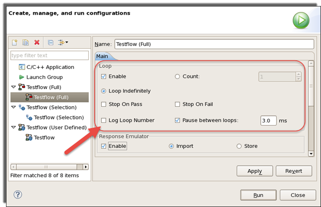

Loop configuration settings
The test loop is set by the parameters in the Loop area of the
Run dialog. To open this dialog, in the SmarTest Work Center,
choose .
The figure below uses the Testflow (Full) window as an example. The Loop area is the same in Testflow (Full), Testflow (Selection) and Testflow (User Defined).

Enable |
When this checkbox is selected, the testflow or test suite is executed in a loop according to specifications described below. If it is cleared, the testflow or test suites are executed only once. |
Count |
The number of loop iterations to be performed. |
Loop Indefinitely |
If this option is chosen, the testflow or test suite is executed until you give an Abort command, or until the Stop on Fail or Stop on Pass conditions are met. |
Stop on Fail |
The testflow or test suite is executed until a fail bin is reached that does not have the Overon flag set. The overall pass/fail result depends on the actual test result, the Set to Fail test suite flag and the Test Level flag. |
Stop on Pass |
The testflow or test suite is executed until all tests in the sequence have been completed with a pass result. This is different from Stop on fail in that Stop on fail halts the test when a single fail bin is reached while Stop on pass requires all test suites to pass. The Hold on Fail or Hold test suite flags still cause the execution to pause. Clicking Continue continues the loop execution. Clicking Abort terminates the loop execution. |
Log Loop Number |
When this option is enabled, a message is output to the report window at the beginning of each testflow loop iteration, similar to this one:
The current testflow loop number is displayed with the first iteration numbered as 1. No message is output when executing the test suites in a loop. If multisite testing is also enabled, the loop number is reported only at the beginning of the first tested site. |
Pause between loops: |
When this option is enabled and a time interval is specified in the ms text box, execution pauses at completion of each loop and waits for the given number of milliseconds before it continues executing the next loop. You adjust the wait time by changes the numeric input in the ms text box. By default, the value is 0.0 millisecond, that is, no time interval between loops and execution does not pause after each loop. Always used together with the ms text box to the right of it. |
Functional changes
- Introduced before SmarTest 6.3.2
- SmarTest 6.5.2: The Run Config window replaces the Looping Configuration Dialog window.
- SmarTest 6.5.2: You cannot change the loop configuration during the testflow or test suite execution.
- SmarTest 7.1.2: Stop on Fail now stops when any test suite in a sequence has an overall fail result and Stop on Pass now stops when all of the test suites in a sequence pass.
- SmarTest 7.4.1: For Testflow (Full), Testflow (Selection) and Testflow (User Defined), a new option "Pause between loops" allows user to specify a wait time between consecutive executions.